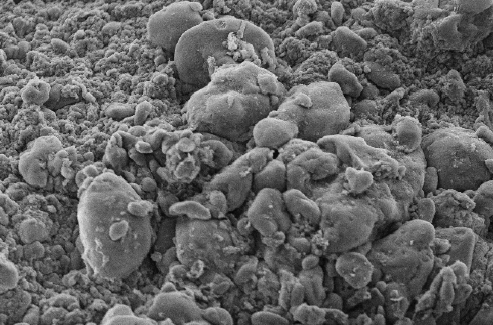

Dr. Akhilesh K. Gaharwar, a Bio-medical Engineer, at the Texas A&M University has developed a therapeutic hydrogel for injecting into internal and external bleeding wounds that can stop bleeding. This new injectable hydrogel material is made from nanoflakes of synthetic clay and sugar chains extracted from seaweed. This remarkable hydrogel stays in a liquid state when under mechanical pressure, such as during an injection, but as soon as the force is released it turns to solid.
(Texas A&M University College of Engineering)
The hydrogel then interacts with the body’s blood by attracting plasma protein and platelets to its surface and activating them once attached. This action kick-starts the clotting process, which has been lowered in laboratory studies from about six minutes to approximately two minutes.
In addition to the gel’s current features, the researchers at the University of Texas are looking to embed proteins, growth factors, and other biologics into the material, speeding up the overall healing process. The researchers believe that they can include just about any of many small molecule drugs or large molecule proteins for sustained release from the gel.
A significant feature of the new gel is that it can be stored at room temperature for long periods of time, making it easy to implement and applicable for battlefield, accident, or surgical situations and it has a very low cost per usage.
Watch Dr. Gaharwar’s video here.
The hydrogel is biocompatible because it is made from materials that humans and animals currently consume. These materials are commercially available and affordable. Dr. Gaharwar says that two companies are currently testing the hydrogel in large animals. If these tests prove successful, he is hoping that it will become commercially available in the very near future.
Additional information can be found here.
This innovative development looks like a paradigm changer to me.
What do you think?